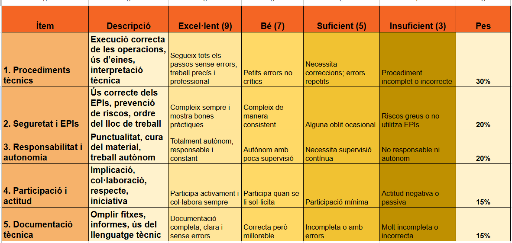

Cas pràctic: un vehicle que no arrenca
Un client porta el seu vehicle al taller perquè des de fa uns dies li costa arrencar. Aquest matí, quan ha intentat posar-lo en marxa, el motor d'arrencada girava molt lentament i finalment no ha aconseguit arrencar.
En fer una primera comprovació amb el multímetre, amb el motor aturat, obtenim una tensió de 12,1 V als borns de la bateria.
El client ens pregunta si cal substituir la bateria, però abans de prendre aquesta decisió hem de comprovar què està passant.
- El vostre repte:
Imagineu que sou els mecànics encarregats de revisar aquest vehicle. Treballant en parelles, haureu d'investigar quines poden ser les causes del problema i decidir quines comprovacions faríeu per identificar l'avaria.
No es tracta d'endevinar quina peça està fallant, sinó de seguir un procés de diagnosi i justificar les decisions.
-Preguntes inicials:
Què ens indica el símptoma que presenta el vehicle?
Quines possibles causes poden explicar aquesta dificultat d'arrencada?
És suficient la mesura de 12,1 V per decidir que hem de canviar la bateria? Per què?
Quines altres comprovacions faríeu abans de substituir algun component?
Objectiu de l'activitat
Elaborar una proposta de diagnosi justificada, utilitzant els coneixements del sistema de càrrega i arrencada i la informació tècnica disponible.
Full de treball
Treball en parelles
A partir del cas pràctic anterior, heu d'elaborar una proposta de diagnosi del vehicle.
1. Identificació del problema.
Quins símptomes presenta el vehicle?
Quina informació tenim fins ara?
Quina informació ens falta per poder identificar l'avaria?
2. Possibles causes.
Plantegeu almenys tres possibles causes del problema d'arrencada. Expliqueu breument per què considereu que poden estar relacionades amb els símptomes.
3. Planificació de les comprovacions.
Indiqueu quines proves faríeu al taller, en quin ordre i quines eines necessitaríeu.
4. Interpretació dels resultats.
Consulteu la informació tècnica disponible i expliqueu què indica la mesura inicial de 12,1 V.
Valoreu quines altres dades necessitaríeu abans de prendre una decisió.
5. Proposta de diagnosi.
Redacteu una conclusió conjunta indicant:
Quina és la causa que considereu més probable.
Quines comprovacions permetrien confirmar-la.
Per què no substituiríeu cap component sense fer abans les proves necessàries.
6. Posada en comú
Cada parella explicarà breument les seves conclusions a la resta del grup. Compararem les diferents propostes i comentarem quines comprovacions són més adequades.
Producte final: Un full de diagnosi amb les hipòtesis, les comprovacions proposades i una conclusió justificada.
Guia de consulta per resoldre el cas pràctic
Abans de proposar una diagnosi, reviseu els continguts del projecte relacionats amb el sistema de càrrega i arrencada.
Informació que podeu consultar:
Sistema de càrrega i arrencada: funció de la bateria, l'alternador i el motor d'arrencada.
Comprovació de la bateria: ús del multímetre i interpretació de la tensió.
Comprovació del sistema de càrrega: funcionament de l'alternador i comprovacions bàsiques.
Pistes per orientar la investigació:
Una bateria amb poca càrrega pot provocar dificultats d'arrencada?
Un problema a les connexions elèctriques pot produir símptomes semblants?
Quina relació hi pot haver entre el funcionament de l'alternador i l'estat de càrrega de la bateria?
Quines comprovacions permetrien diferenciar aquestes possibles causes?
Recordeu: una única mesura no sempre és suficient per confirmar una avaria. Cal relacionar els símptomes amb les comprovacions realitzades i consultar les especificacions del fabricant.
L'objectiu no és encertar una resposta a la primera, sinó justificar el procés que heu seguit per arribar a una conclusió.
Rúbrica d'avaluació del cas pràctic

Aprenem dels errors: diagnosi d'avaries
En un taller mecànic, una diagnosi incorrecta pot provocar la substitució innecessària de peces i una pèrdua de temps i diners.
- Situació pràctica:
Un vehicle no arrenca correctament. El mecànic mesura la tensió de la bateria amb el motor aturat i obté un valor de 12,1 V. Sense fer cap altra comprovació, decideix substituir el motor d'arrencada.
- Treball per parelles:
Analitzeu aquesta situació i responeu les preguntes següents:
1. Creieu que el mecànic ha actuat correctament? Per què?
2. Quina informació ens proporciona una tensió de 12,1 V?
3. Quines comprovacions faríeu abans de substituir qualsevol component?
4. Quines conseqüències pot tenir una diagnosi precipitada per al client i per al taller?
5. Posada en comú
Compareu les vostres respostes amb les d'una altra parella i comenteu si heu arribat a les mateixes conclusions.
- Conclusió:
Elaboreu una recomanació breu per evitar diagnòstics precipitats en un taller mecànic.
Recordeu que una única mesura no sempre permet determinar la causa d'una avaria. Cal contrastar les hipòtesis amb les comprovacions adequades abans de prendre una decisió.